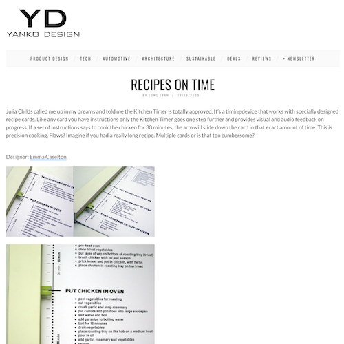

Kitchen Timer by Emma Caselton » Yanko Design

A recipe with an integrated timeline and timer... to make sure things turn out just right and at the right time. I'd be curious to see if these have multi-recipe helpers... because for me its tougher to time multiple things to be ready at the same time. Either way, pretty slick.
Previously: Terrible Yellow Eyes Next: Pterodactyl Squad - Weezer - The 8-bit Album